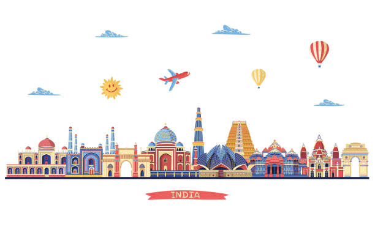

Varanasi: A Cultural Odyssey along the Sacred Ganges
Varanasi,the ancient city on the banks of the sacred Ganges River, holds a timeless allure for travelers seeking a profound spiritual and cultural experience. With its rich history, vibrant traditions, and spiritual significance, Varanasi stands as a testament to India's cultural heritage and spiritual legacy.
1. History and Heritage:
Varanasi traces its roots back over 3,000 years, making it one of the oldest continuously inhabited cities in the world. Steeped in myth and legend, the city is said to have been founded by Lord Shiva himself, making it a revered pilgrimage site for Hindus. Over the centuries, Varanasi has been a center of learning, art, and culture, attracting scholars, poets, and musicians from far and wide.
2. Culinary Delights:
No visit to Varanasi is complete without sampling its delicious cuisine. From mouthwatering street food like chaat, samosas, and kachoris to traditional sweets like jalebi and rabri, Varanasi offers a tantalizing array of culinary delights to tempt the palate. Don't miss the opportunity to savor a traditional Banarasi thali, with its aromatic curries, fragrant rice, and crispy papad.
3. Spiritual Significance:
Varanasi is considered one of the holiest cities in India, with millions of pilgrims flocking to its ghats each year to perform sacred rituals and seek spiritual purification in the waters of the Ganges. The city is home to numerous temples, ashrams, and spiritual centers, each offering a unique opportunity for devotees to connect with the divine and deepen their spiritual practice.
4. Cultural Experiences:
Varanasi is a melting pot of cultures, traditions, and artistic expressions. Wander through its narrow lanes and bustling markets, where artisans practice age-old crafts like silk weaving, pottery, and metalwork. Attend a classical music concert or dance performance, or simply soak up the vibrant street scenes and bustling bazaars that make Varanasi a feast for the senses.
5. Ghats of Varanasi:
The ghats of Varanasi are the beating heart of the city, where life unfolds in a colorful tapestry of sights, sounds, and rituals. From the bustling Dashashwamedh Ghat, where the mesmerizing Ganga Aarti ceremony takes place each evening, to the serene Manikarnika Ghat, where funeral pyres burn day and night, each ghat has its own story to tell and its own significance in the spiritual life of Varanasi.
Conclusion :
Varanasi is a city like no other, where time seems to stand still and the sacred and the mundane coexist in perfect harmony. Whether you come seeking spiritual enlightenment, cultural immersion, or simply a glimpse into India's rich tapestry of life, Varanasi promises to captivate your heart and soul with its timeless charm and enduring beauty.
